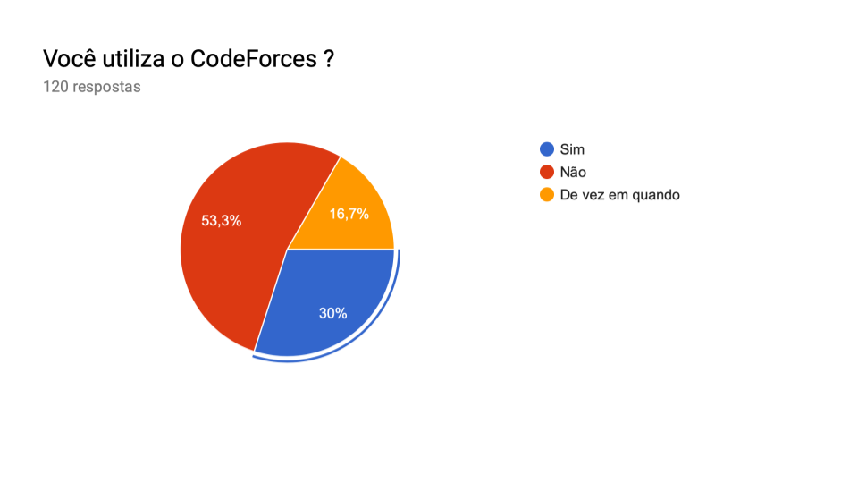
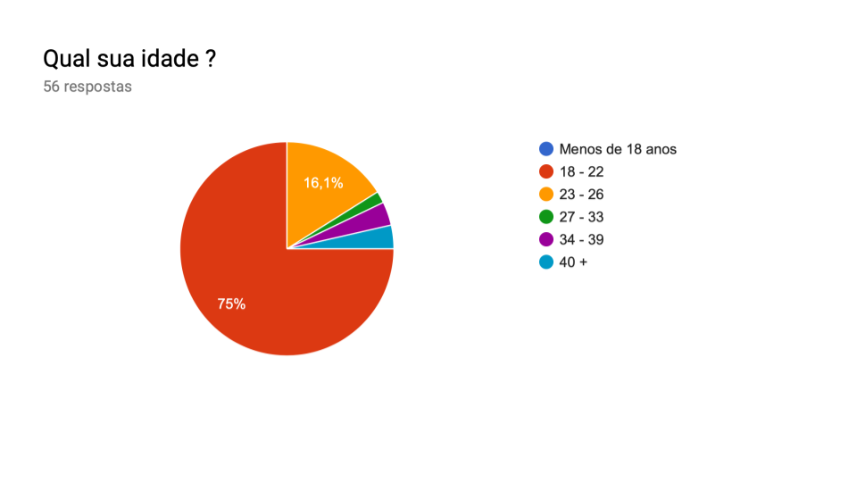
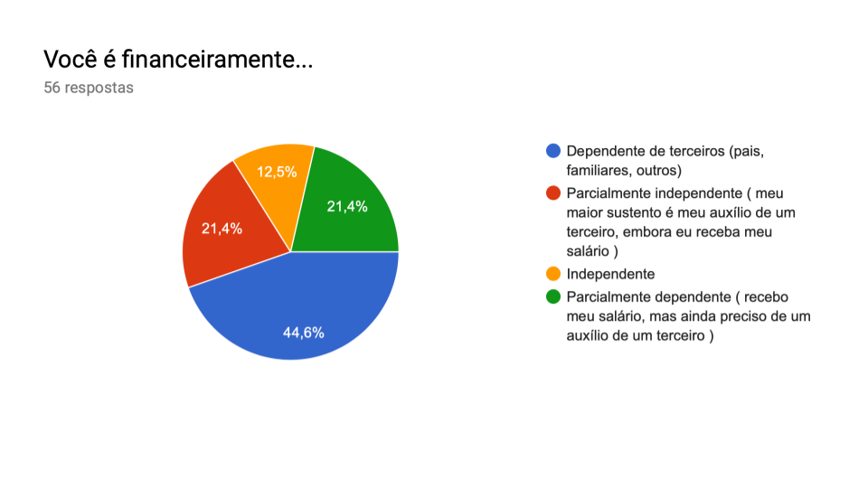
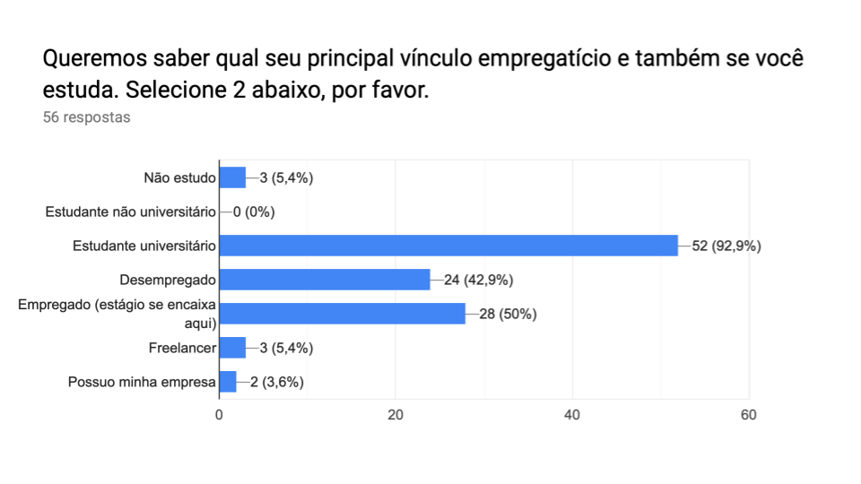
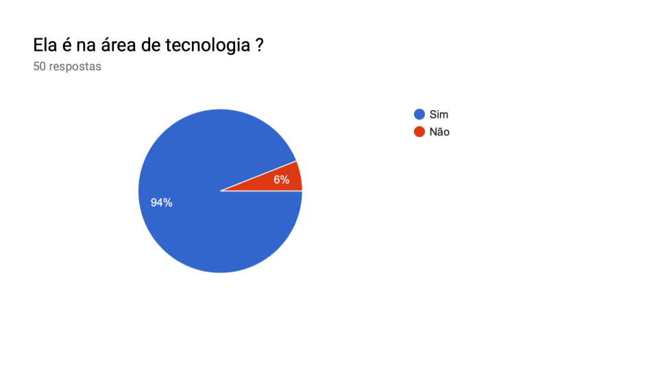
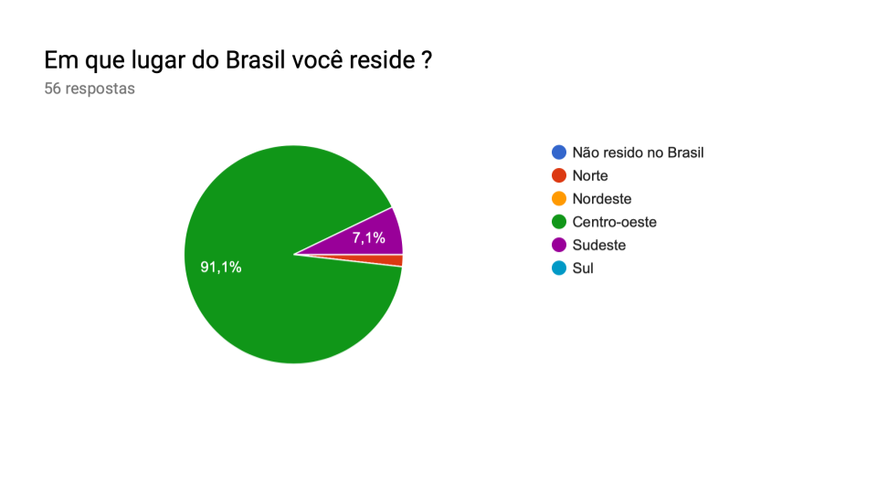
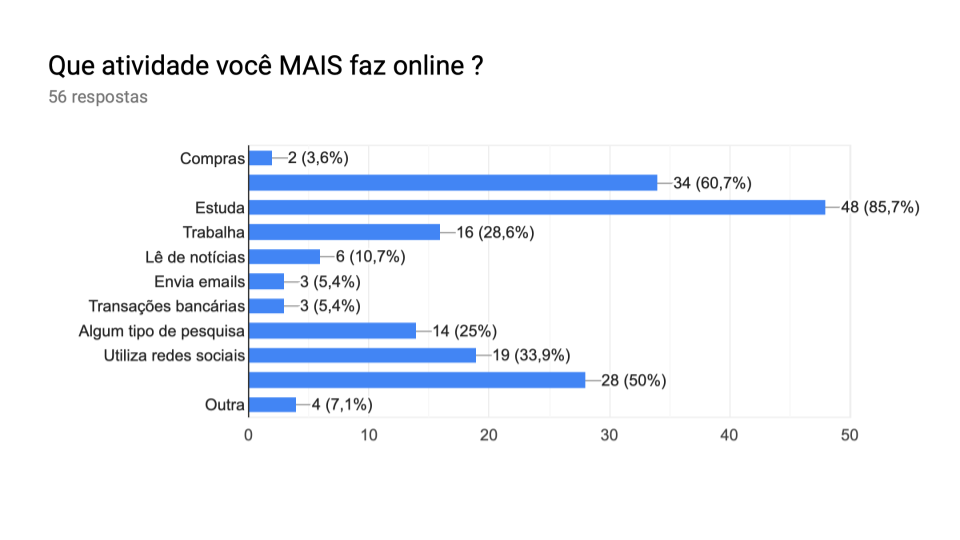
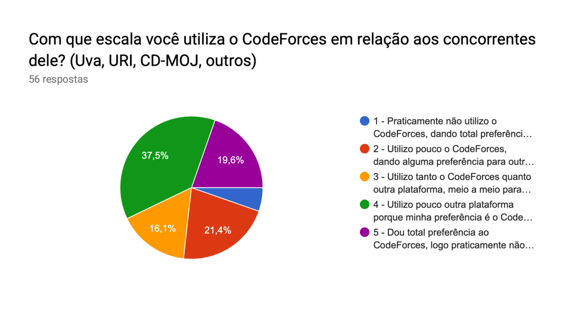

Análise de usuário
Ao trabalhar com engenharia de software, seja para construir, para manter ou para evoluir um sistema, é muito importante saber responder, de maneira objetiva, à pergunta : "Quem é o usuário desse software?".
Por muitas vezes, a resposta para esse questionamento pode não ser muito trivial de se obter. Outras vezes, ela pode ser tão trivial que, na verdade, não fornece informações boas e objetivas sobre o usuário.
A ideia da análise de usuário é buscar o máximo de informações relevantes sobre o usuário de um sistema, de maneira clara e objetiva, a fim de que a engenharia desse software seja efetiva e realmente voltada àquele tipo de usuário. Tais informações podem ser usadas nos processos de engenharia desde o levantamento de requisitos até à projeção da interface do sistema com o usuário, preocupando-se com a experiência dele no sistema.
Demonstração de resultados da pesquisa
Existem diversas técnicas para analisar o perfil de usuário de um software. Com o objetivo de fazer um levantamento rápido das informações sobre o usuário do CodeForces e de ter um alcance razoável de pesquisa, além de poder coletar esses dados online, nossa equipe optou pela técnica dos questionários.
As informações alvo do nosso trabalho não são muitas. Queremos saber alguns dados demográficos e também alguns dados em relação à interação do usuário com a Plataforma, bem como sobre a relação dele com a internet.
Nesse sentido, um questionário foi concebido. A primeira pergunta, que é chave para restringirmos os entrevistados, é para sabermos se o respondente usa o CodeForces. Veja imagem abaixo :
1. Você utiliza o CodeForces ?

Como é possível perceber, conseguimos alcançar 120 pessoas na pesquisa. Entretanto, 53,3 % delas não utiliza a Plataforma. Os outros 46,7 % , que são os usuários em questão, passaram para as próximas perguntas do questionário, este dividido conforme abaixo:
Obs.: O questionário foi feito em modelo interativo, no qual as respostas do usuário determinam se ele prossegue para a próxima pergunta ou não. Por esse motivo, algumas perguntas podem ter o número de respostas diferente de outras.
Dados demográficos
2. Qual sua idade ?

3. Qual seu gênero ?

4. Você é financeiramente...

5. Queremos saber qual seu principal vínculo empregatício e também se você estuda. Selecione 2 abaixo, por favor.

6. Qual seu maior nível de formação ?

7. Ela é na área de tecnologia ?

8. Em que lugar do Brasil você reside ?

9. Onde você reside ?
Para usuários que selecionaram a opção "Não resido no Brasil", da pergunta anterior.
Não obtivemos respostas.
10. Quais idiomas abaixo você fala ? (Escolha primeiro o seu idioma de maior fluência, depois o próximo...)

Relação do usuário com a tecnologia
11. Que atividade você MAIS faz online ?

12. Qual sua principal tarefa ao utilizar o CodeForces ?

13. Com que escala você utiliza o CodeForces em relação aos concorrentes dele? (Uva, URI, CD-MOJ, outros)

14. Sobre a tarefa que você mais faz no CodeForces, com que frequência você a realiza na plataforma ?

Perfil do usuário do CodeForces
Perfil demográfico
- A maior parte dos usuários do CodeForces concentra-se na região Centro-oeste
do Brasil.
-
O gênero masculino se apresenta em maior quantidade como usuário do CodeForces.
-
A idade dos usuários varia entre 18 a 22 anos.
-
Os usuários apresentam-se financeiramente dependentes de terceiros
(pais, familiares, outros).
-
Estudantes universitários empregados são os que mais utilizam a plataforma.
-
O nível de formação dos usuários se dá em maior número como superior incompleto na área de Tecnologia.
-
O idioma de maior fluência dos usuários é o Português, seguido do Inglês.
Perfil tecnológico
- A atividade mais realizada pelos usuários por meio da internet diz
respeito ao estudar, seguido pelo entretenimento (assistir a filmes, séries, vídeos etc).
- A principal tarefa realizada pelos usuários dentro da Plataforma é
participar de Contests, seguido de resolver exercícios isolados de programação.
- O usuário utiliza pouco outra plataforma porque sua preferência é o CodeForces,
sendo que, para alguns deles, o CodeForces tem total preferência.
- Uma ou duas vezes na semana é a frequência de uso do usuário para o CodeForces.
Versionamento de edições desta página
| Data | Autor | Descrição | Versão |
|---|---|---|---|
| 08/10/2019 | Erick Giffoni | Criação e edição inicial da página. | 0.1 |
| 09/10/2019 | Erick Giffoni | Adição dos resultados da pesquisa | 0.2 |
| 12/10/2019 | - Erick Giffoni - Geise Saunier | Definição do perfil | 1.0 |